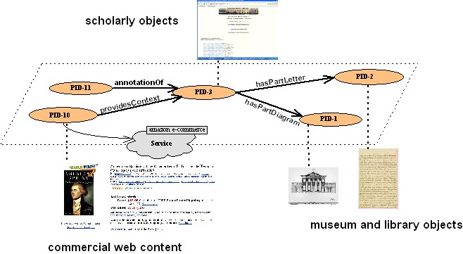

Fedora digital objects can be related to other Fedora objects in many
ways. For example there may be a Fedora object that represents a collection
and other objects that are members of that collection. Also, it may be the
case that one object is considered a part of another object, a derivation of
another object, a description of another object, or even equivalent to
another object. For example, consider a network of digital
objects pertaining to Thomas Jefferson, in which scholarly works are stored
as digital objects, which are related to other digital objects representing
primary source materials in libraries or museums. The composite
scholary objects can be considered a graph of related digital objects.
Other types of objects can also be related to the scholarly object over
time, for instance annotations about the scholarly object can be created by
others and related to the original object. Also, digital objects
can be created to act as "surrogates" or "proxies" for dynamically produced
web content such as an Amazon page for a book relevant to the scholarly
object. Such a network of digital objects can be created using
Fedora, which in the abstract, would look like this:

Digital object relationship metadata is a way of asserting these various
kinds of relationships for Fedora objects. A default set of common
relationships is defined in the
Fedora relationship ontology
(actually, a simple RDF schema) which defines a set of common generic
relationships useful in creating digital object networks. These
relationships can be refined or extended. Also, communities can define
their own ontologies to encode relationships among Fedora digital objects.
Relationships are asserted from the perspective of one object to another
object as in the following general pattern:
<subjectFedoraObject> <relationshipProperty> <targetFedoraObject>
The first Fedora object is considered the "subject" of the
relationship assertion. The relationship, itself, is considered a property
of the subject. The target Fedora object is the related object. Thus, a
valid relationship assertion as an English-language sentence might be:
<MyCatVideo> <is a member of the collection> <GreatCatVideos>